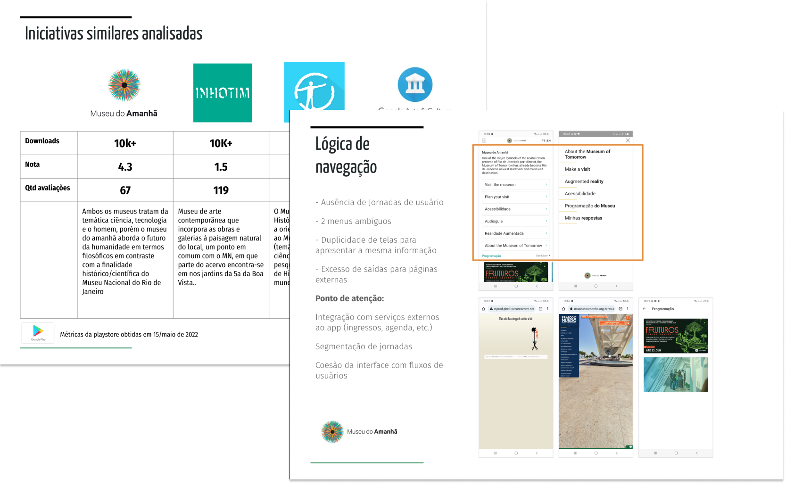
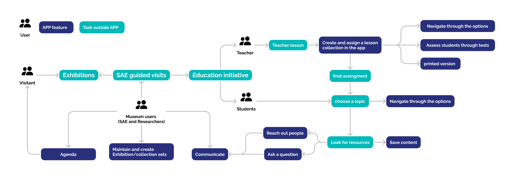
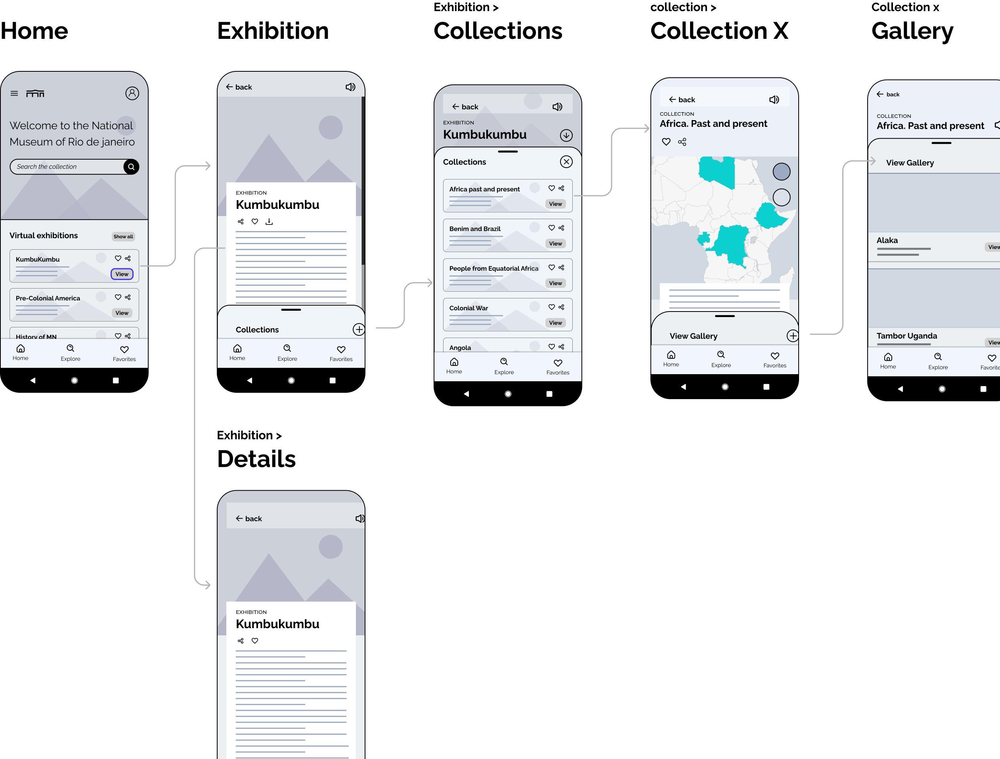

The Project
Conceptual project of an Educational mobile app for the National Museum of Rio de Janeiro, highlighting community and education programs that stayed active despite the museum's closure after a devastating fire.
For my Google UX certification, I wanted to work on something real that I would be able to gather public information to build my case, therefore I chose to design an app for the National Museum of Rio de Janeiro, following the devastating fire that damaged its collection. Beyond designing, this project taught me how to adapt and make new meanings in times of crisis.
Research Context
Initially I had no access to stakeholders, therefore I began exploring publicly available information about the museum to build a solid foundation that would guide the decisions of my project.
Fast, low-cost, great for spotting patterns and building context. From scavenging social media, webinars to review formal reports, competitor analysis, press articles, academic papers, all without leaving your desk.
Research Findings
Benchmark research showed that most museum apps are designed to guide visitors through exhibitions. However, during the restoration, the National Museum could no longer rely on its physical space. Instead, I uncovered its powerful educational outreach, rooted in a vibrant community of educators, researchers, and the general public.

Opportunities for the Project
The app can expand the museum's educational reach beyond artifacts by offering teachers virtual tours, customizable lessons, and other resources. This turns classrooms and homes into extensions of the museum, making it a digital learning hub accessible anytime, anywhere.

Designing the Solution
Based on the discovery process, the app was designed to keep the community informed and engaged with the museum's collections, projects, campaigns, and events, while enabling teachers to access and create educational content for classroom use or to be used in the museum's educational initiative.
The information architecture and the collections were organized in a way it would be possible to attend the permanent collections but also to lessons, providing educational content for teachers to use in class.

Key Design Decisions
- Community-First Approach: Prioritized keeping the museum's community engaged and informed
- Educational Focus: Designed for teachers to access and create educational content
- Digital Transformation: Turned physical limitations into digital opportunities
- Accessibility: Made museum resources available anytime, anywhere
User journeys and Wireframing
The information architecture and the collections were organized in a way it would be possible to attend the permanent collections but also to create educational unities to provide educational content for teachers to use in class.

Prototype
The information architecture and the collections were organized in a way it would be possible to attend the permanent collections but also to create educational unities to provide educational content for teachers to use in class.

Reflection & Learnings
As part of an educational project, I initially planned to reuse my existing design knowledge. However, working without direct access to stakeholders challenged that approach and highlighted the importance of rigorous secondary research. This experience taught me how to build a strong foundation using publicly available information.
Key Learnings
- Adaptation in Crisis: Discovering new opportunities by addressing everyday needs in moments of change
- Secondary Research Value: The power of comprehensive desk research to build context
- Community-Centered Design: The importance of serving existing communities rather than just creating new features
- Digital Transformation: How technology can preserve and extend cultural heritage